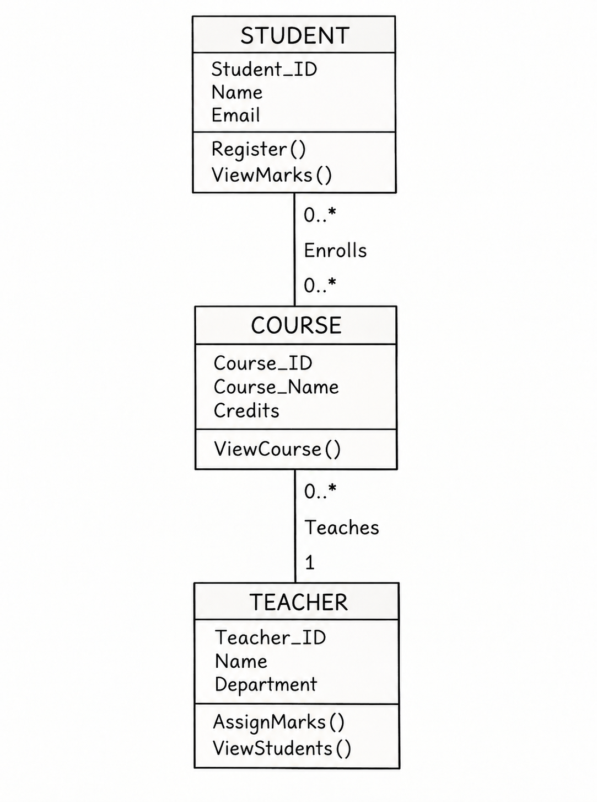

Q6. Create a UML Class Diagram for a College Management System and Map It to Relational Schemas.
1. UML Class Diagram
A UML (Unified Modeling Language) Class Diagram shows the classes, attributes, methods, and relationships in a system.
In a College Management System, the main classes are STUDENT, COURSE, and TEACHER.
2. UML Class Diagram of College Management System

3. Relationships Between Classes
1. STUDENT and COURSE – Many-to-Many (M:N)
- One student can enroll in many courses.
- One course can have many students.
-
In UML,
0..*means zero or many.
2. TEACHER and COURSE – One-to-Many (1:N)
- One teacher can teach many courses.
- Each course is taught by one teacher.
-
In UML,
1means exactly one, and0..*means zero or many.
4. Mapping UML Classes to Relational Schemas
Mapping means converting UML classes into database tables.
- Each class becomes a table.
- Each attribute becomes a column.
- Primary Key (PK) uniquely identifies each record.
- Foreign Key (FK) connects related tables.
1. STUDENT Table
STUDENT(Student_ID, Name, Email)
Primary Key: Student_ID
2. TEACHER Table
TEACHER(Teacher_ID, Name, Department)
Primary Key: Teacher_ID
3. COURSE Table
COURSE(Course_ID, Course_Name, Credits, Teacher_ID)
Primary Key: Course_ID
Foreign Key: Teacher_ID references TEACHER.
4. ENROLLMENT Table
ENROLLMENT(Student_ID, Course_ID)
Primary Key: (Student_ID, Course_ID)
Foreign Keys:
- Student_ID references STUDENT.
- Course_ID references COURSE.
The ENROLLMENT table is created to represent the Many-to-Many (M:N) relationship between STUDENT and COURSE.